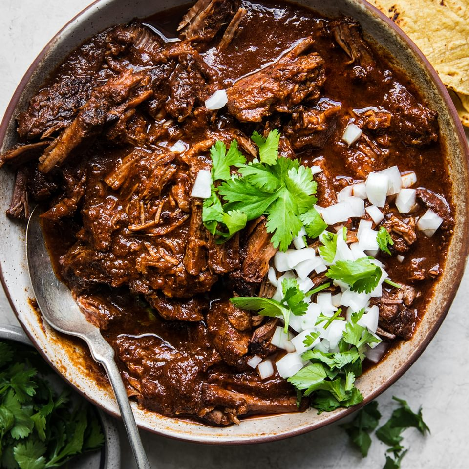

Beef Birria

Description:
This is a Mexican stew made with blended chile peppers simmered with beef stew meat.
Ingredients:
- 5 dried Anaheim chile peppers, stemmed and seeded
- 5 guajillo chile peppers, stemmed and seeded.
- 1/4 onion
- 1 tablespoon mixed spices
- 1 tablespoon salt
- 3 lbs. cubed beef stew meat
- 6 bay leaves
Steps:
- Place Anaheim and guajillo peppers in a saucepan; cover with water and bring to a boil. Reduce heat to medium-low and simmer until tender, about 15 minutes. Set aside to cool for 5 minutes.
- Transfer chiles and water into a blender; add onion, mixed spices, and salt. Blend until smooth.
- Place stew meat in a large pot; stir in pureed chile mixture and add bay leaves. Cook over medium-low heat until meat is very tender, 3-5 hours.